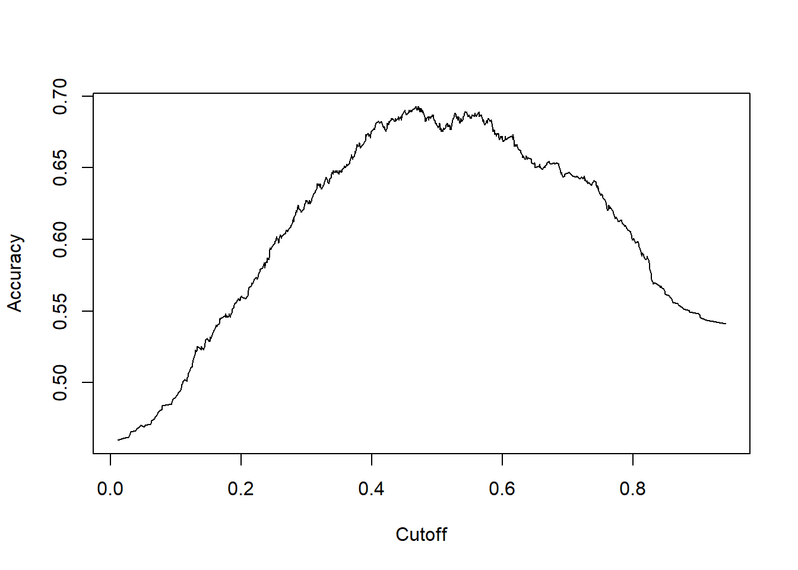
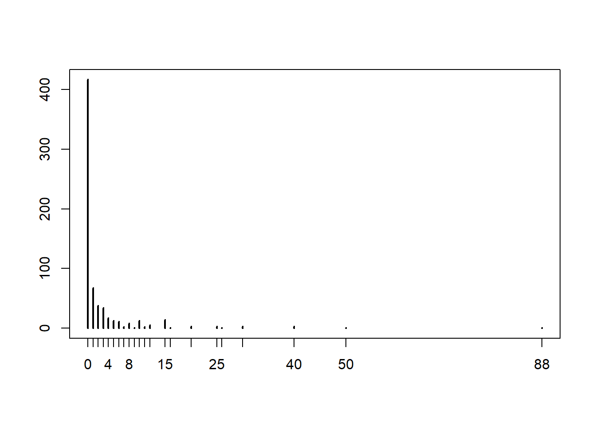

Qualitative analysis
Many microeconometric models belong to the domain of generalized linear models (GLMs): probit model, Poisson regression. R has a single fitting function glm() closely resembling lm(). Because of the built-in distributional assumption, hence use method of maximym likelihood (ML).
We use the training dataset to get better boundary conditions that could be used to determine each target class. Once the boundary conditions are determined, the next task is to predict the target class. The whole process is known as classification.
We use the dataset from the Halloween candy dataset, it can be loaded through the fivethirtyeight dataset. The candy-data.csv includes attributes for each candy along with its ranking.
library(fivethirtyeight)
candy <- candy_rankingsThank to Walt Hickey for making the data available. We can display values with DataTables for the five first column.
library(DT)
datatable(candy[1:5], options = list(pageLength = 5))We’ll be trying to predict if a candy is chocolaty or not based on all the other features in the dataset. A logistic regression is a great choice for this particular modeling task because the variable we’re trying to predict is either TRUE or FALSE. The logistic regression model will output a probability that we can use to make our decision.
In this data, the variable chocolat is already a bolean. If you need to recode this variable or any other, please run the following code.
We also delete the first variable competitorname because the name explain perfectly if the candy is chocolate or not.
candy$chocolate = factor(candy$chocolate, levels = c(0, 1))candy <- candy[-1]Splitting the dataset into the Training set and Test set
library(caTools)
set.seed(123)
split = sample.split(candy$chocolate, SplitRatio = 0.75)
training_set = subset(candy, split == TRUE)
test_set = subset(candy, split == FALSE)Logistic Regression
Fitting Logistic Regression to the Training set
classifier = glm(formula = chocolate ~ .,
family = binomial,
data = training_set)## Warning: glm.fit: fitted probabilities numerically 0 or 1 occurredsummary(classifier)##
## Call:
## glm(formula = chocolate ~ ., family = binomial, data = training_set)
##
## Deviance Residuals:
## Min 1Q Median 3Q Max
## -1.52517 0.00000 0.00000 0.01209 1.68356
##
## Coefficients:
## Estimate Std. Error z value Pr(>|z|)
## (Intercept) -14.5956 8.6702 -1.683 0.0923 .
## fruityTRUE -28.1609 6629.5699 -0.004 0.9966
## caramelTRUE 0.3882 2.7224 0.143 0.8866
## peanutyalmondyTRUE -1.7586 10.1077 -0.174 0.8619
## nougatTRUE -21.0414 13501.5767 -0.002 0.9988
## crispedricewaferTRUE 17.3523 18155.6747 0.001 0.9992
## hardTRUE -18.6568 11084.9460 -0.002 0.9987
## barTRUE 20.9094 13501.5774 0.002 0.9988
## pluribusTRUE 2.8742 2.3581 1.219 0.2229
## sugarpercent -2.3620 3.3596 -0.703 0.4820
## pricepercent 1.6495 2.8887 0.571 0.5680
## winpercent 0.3159 0.1863 1.696 0.0899 .
## ---
## Signif. codes: 0 '***' 0.001 '**' 0.01 '*' 0.05 '.' 0.1 ' ' 1
##
## (Dispersion parameter for binomial family taken to be 1)
##
## Null deviance: 87.72 on 63 degrees of freedom
## Residual deviance: 11.76 on 52 degrees of freedom
## AIC: 35.76
##
## Number of Fisher Scoring iterations: 21Predicting the Test set and Training set results
prob_pred = predict(classifier, type = 'response', newdata = test_set)
y_pred = ifelse(prob_pred > 0.5, 1, 0)Making the Confusion Matrix
cm = table(test_set$chocolate, y_pred >0.5)
print(cm)##
## FALSE TRUE
## FALSE 12 0
## TRUE 2 7Visualising the Training set results
We decide first what variable we want on our x-axis. That’s the only variable we’ll enter as a whole range. (The range we set here will determine the range on the x-axis of the final plot, by the way.) We can take inspiration from : https://cran.r-project.org/web/packages/ggiraphExtra/vignettes/ggPredict.html.
K-Nearest Neighborst (K-NN)
Fitting K-Nearest Neighborst (K-NN) to the Training set
library(class)
y_pred = knn(train = training_set,
test = test_set,
cl = training_set$chocolate,
k = 5,
prob = TRUE)Making the Confusion Matrix
cm = table(test_set$chocolate, y_pred)
print(cm)## y_pred
## FALSE TRUE
## FALSE 10 2
## TRUE 1 8Support Vector Machine (SVM)
Fitting Support Vector Machine (SVM) to the Training set
library(e1071)
classifier = svm(formula = chocolate ~ .,
data = training_set,
type = 'C-classification',
kernel = 'linear')Predicting the Test set results
y_pred = predict(classifier, newdata = test_set)Making the Confusion Matrix
cm = table(test_set$chocolate, y_pred)
print(cm)## y_pred
## FALSE TRUE
## FALSE 12 0
## TRUE 2 7Kernel SVM
We do exactly the same as the SVM model, changing the kernel
library(e1071)
classifier = svm(formula = chocolate ~ .,
data = training_set,
type = 'C-classification',
kernel = 'radial')
y_pred = predict(classifier, newdata = test_set)
cm = table(test_set$chocolate, y_pred)
print(cm)## y_pred
## FALSE TRUE
## FALSE 12 0
## TRUE 2 7Naive Bayes
Fitting Naive Bayes to the Training set
library(e1071)
classifier = naiveBayes(x = training_set,
y = training_set$chocolate)Predicting the Test set results
y_pred = predict(classifier, newdata = test_set)Making the Confusion Matrix
cm = table(test_set$chocolate, y_pred)
print(cm)## y_pred
## FALSE TRUE
## FALSE 12 0
## TRUE 1 8Decision Tree Classification
Fitting Decision Tree Classifications to the Training set
library(rpart)
classifier = rpart(formula = chocolate ~ .,
data = training_set)Predicting the Test set results
y_pred = predict(classifier, newdata = test_set, type = 'vector')Making the Confusion Matrix
cm = table(test_set$chocolate, y_pred>0.5)
print(cm)##
## FALSE TRUE
## FALSE 12 0
## TRUE 2 7Plotting the tree
plot(classifier)
text(classifier)Random Forest Classification
Fitting Random Forest Classification to the Training set
library(randomForest)
set.seed(123)
classifier = randomForest(formula= chocolate~ . ,
data=candy,
ntree = 500)## Warning in randomForest.default(m, y, ...): The response has five or fewer
## unique values. Are you sure you want to do regression?Predicting the Test set results
y_pred = predict(classifier, newdata = test_set)Making the Confusion Matrix
cm = table(test_set$chocolate, y_pred>0.5)
print(cm)##
## FALSE TRUE
## FALSE 12 0
## TRUE 1 8Plotting the tree
plot(classifier)Binary Dependent Variables : Probit and Logit model
A standard normal distribution yields to a probit model whereas a logistic distribution yields to a logit model.
We take the example of the Female labor force participation for 872 women from Switzerland (Gerfin, JAE 1996).
Regression
The dependent variable is participation and regressors are income, nonlabor income (in logs) education, years of formal education, age, age in decades, numbers of younger / older children foreign and factor indicating citizenship.
data("SwissLabor", package = "AER")
swiss_probit <- glm(participation ~ . + I(age^2),
data = SwissLabor, family = binomial(link = "probit"))
summary(swiss_probit)##
## Call:
## glm(formula = participation ~ . + I(age^2), family = binomial(link = "probit"),
## data = SwissLabor)
##
## Deviance Residuals:
## Min 1Q Median 3Q Max
## -1.9191 -0.9695 -0.4792 1.0209 2.4803
##
## Coefficients:
## Estimate Std. Error z value Pr(>|z|)
## (Intercept) 3.74909 1.40695 2.665 0.00771 **
## income -0.66694 0.13196 -5.054 4.33e-07 ***
## age 2.07530 0.40544 5.119 3.08e-07 ***
## education 0.01920 0.01793 1.071 0.28428
## youngkids -0.71449 0.10039 -7.117 1.10e-12 ***
## oldkids -0.14698 0.05089 -2.888 0.00387 **
## foreignyes 0.71437 0.12133 5.888 3.92e-09 ***
## I(age^2) -0.29434 0.04995 -5.893 3.79e-09 ***
## ---
## Signif. codes: 0 '***' 0.001 '**' 0.01 '*' 0.05 '.' 0.1 ' ' 1
##
## (Dispersion parameter for binomial family taken to be 1)
##
## Null deviance: 1203.2 on 871 degrees of freedom
## Residual deviance: 1017.2 on 864 degrees of freedom
## AIC: 1033.2
##
## Number of Fisher Scoring iterations: 4Visualization
Produces spine plot for resulting proportions of participation within age groups
plot(participation ~ age, data = SwissLabor, ylevels = 2:1)Effect
In linear models, the interpretation of model parameters is linear. The effects in probit model vary with regressors.
You need additional step to display the average of sample marginal effect :
fav <- mean(dnorm(predict(swiss_probit, type = "link")))
fav * coef(swiss_probit)## (Intercept) income age education youngkids oldkids
## 1.241929965 -0.220931858 0.687466185 0.006358743 -0.236682273 -0.048690170
## foreignyes I(age^2)
## 0.236644422 -0.097504844Goodness of fit and prediction
We can display the confusion matrix
table(true = SwissLabor$participation, pred = round(fitted(swiss_probit)))## pred
## true 0 1
## no 337 134
## yes 146 255Confusion matrix uses arbitrarily chosen cutoff 0.5 for predicted probabilities. To avoid choosing particular cutoff, we can use the package ROCR that evaluates performance for every conceivable cutoff; e.g., using accuracy of the model – proportion of correctly classified observations.
library(ROCR)
pred <- prediction(fitted(swiss_probit),
SwissLabor$participation)
plot(performance(pred, "acc")) Here we see that 0.5 seems to be OK.
The receiver operating characteristic (ROC) allows also to display true positive rate against false positive rate.
plot(performance(pred, "tpr", "fpr"))
abline(0, 1, lty = 2)
Regression Models for Count data : Poisson Models
We use the RecreationDemand data that regress the number of recreational boating trips to Lake Somerville, TX, in 1980 on divers explicatives variables.
library(AER)
data("RecreationDemand")
rd_pois <- glm(trips ~ ., data = RecreationDemand,
family = poisson)
summary(rd_pois)##
## Call:
## glm(formula = trips ~ ., family = poisson, data = RecreationDemand)
##
## Deviance Residuals:
## Min 1Q Median 3Q Max
## -11.8465 -1.1411 -0.8896 -0.4780 18.6071
##
## Coefficients:
## Estimate Std. Error z value Pr(>|z|)
## (Intercept) 0.264993 0.093722 2.827 0.00469 **
## quality 0.471726 0.017091 27.602 < 2e-16 ***
## skiyes 0.418214 0.057190 7.313 2.62e-13 ***
## income -0.111323 0.019588 -5.683 1.32e-08 ***
## userfeeyes 0.898165 0.078985 11.371 < 2e-16 ***
## costC -0.003430 0.003118 -1.100 0.27131
## costS -0.042536 0.001670 -25.467 < 2e-16 ***
## costH 0.036134 0.002710 13.335 < 2e-16 ***
## ---
## Signif. codes: 0 '***' 0.001 '**' 0.01 '*' 0.05 '.' 0.1 ' ' 1
##
## (Dispersion parameter for poisson family taken to be 1)
##
## Null deviance: 4849.7 on 658 degrees of freedom
## Residual deviance: 2305.8 on 651 degrees of freedom
## AIC: 3074.9
##
## Number of Fisher Scoring iterations: 7Dealing with overdispersion
The Poisson model assumes equal mean and variance. If the variance is larger than the mean, we talk about overdispersion. Test goes as follow (Cameron and Trivedi 1990) :
dispersiontest(rd_pois)##
## Overdispersion test
##
## data: rd_pois
## z = 2.4116, p-value = 0.007941
## alternative hypothesis: true dispersion is greater than 1
## sample estimates:
## dispersion
## 6.5658If that doesn’t hold, like here,then the Poisson model isn’t correct. Quasi-poisson is one possibility when there is overdispersion.
rd_qpois <- glm(trips ~ ., data = RecreationDemand,family = quasipoisson)More flexible distribution is negative binomial with probability density function
library("MASS")
rd_nb <- glm.nb(trips ~ ., data = RecreationDemand)
coeftest(rd_nb)##
## z test of coefficients:
##
## Estimate Std. Error z value Pr(>|z|)
## (Intercept) -1.1219363 0.2143029 -5.2353 1.647e-07 ***
## quality 0.7219990 0.0401165 17.9976 < 2.2e-16 ***
## skiyes 0.6121388 0.1503029 4.0727 4.647e-05 ***
## income -0.0260588 0.0424527 -0.6138 0.53933
## userfeeyes 0.6691676 0.3530211 1.8955 0.05802 .
## costC 0.0480087 0.0091848 5.2270 1.723e-07 ***
## costS -0.0926910 0.0066534 -13.9314 < 2.2e-16 ***
## costH 0.0388357 0.0077505 5.0107 5.423e-07 ***
## ---
## Signif. codes: 0 '***' 0.001 '**' 0.01 '*' 0.05 '.' 0.1 ' ' 1Zero-Inflated Poisson and negative binomial models
Typical problem with count data is that it have too many zeros : RecreationDemand example has 63.28% zeros and the Poisson regression provides only 41.96%.We can plot marginal distribution of response:
plot(table(RecreationDemand$trips),ylab="")
Zero-inflated Poisson (ZIP) model (Mullahy 1986, Lambert 1992) for recreational trips give the following :
library("pscl")
rd_zinb <- zeroinfl(trips ~ . | quality + income, data = RecreationDemand, dist = "negbin")
summary(rd_zinb)##
## Call:
## zeroinfl(formula = trips ~ . | quality + income, data = RecreationDemand,
## dist = "negbin")
##
## Pearson residuals:
## Min 1Q Median 3Q Max
## -1.08868 -0.20032 -0.05687 -0.04525 39.95749
##
## Count model coefficients (negbin with log link):
## Estimate Std. Error z value Pr(>|z|)
## (Intercept) 1.096094 0.257075 4.264 2.01e-05 ***
## quality 0.169019 0.053135 3.181 0.001468 **
## skiyes 0.500479 0.134496 3.721 0.000198 ***
## income -0.069203 0.043802 -1.580 0.114130
## userfeeyes 0.542557 0.282819 1.918 0.055062 .
## costC 0.040427 0.014522 2.784 0.005372 **
## costS -0.066202 0.007746 -8.547 < 2e-16 ***
## costH 0.020609 0.010235 2.014 0.044061 *
## Log(theta) 0.189859 0.113134 1.678 0.093312 .
##
## Zero-inflation model coefficients (binomial with logit link):
## Estimate Std. Error z value Pr(>|z|)
## (Intercept) 5.7184 1.5596 3.667 0.000246 ***
## quality -8.3596 3.9380 -2.123 0.033768 *
## income -0.2516 0.2847 -0.884 0.376832
## ---
## Signif. codes: 0 '***' 0.001 '**' 0.01 '*' 0.05 '.' 0.1 ' ' 1
##
## Theta = 1.2091
## Number of iterations in BFGS optimization: 26
## Log-likelihood: -722 on 12 DfCensored Dependent Variables : Tobit Models
Censored regression models are a class of models in which the dependent variable is censored above or below a certain threshold. A commonly used likelihood-based model to accommodate to a censored sample is the Tobit model, but quantile and nonparametric estimators have also been developed. These and other censored regression models are often confused with truncated regression models. Truncated regression models are used for data where whole observations are missing so that the values for the dependent and the independent variables are unknown. Censored regression models are used for data where only the value for the dependent variable is unknown while the values of the independent variables are still available.
We use the survival package (Therneau and Grambsch 2000) to fit censored regression model and the “Fair’s affairs” (Fair, JPE 1978) dataset, a survey on extramarital affairs conducted by Psychology Today (1969) and dependent variable is affairs (number of extramarital affairs during past year), regressors are notably gender, age…
data("Affairs")
aff_tob <- tobit(affairs ~ age + yearsmarried +
religiousness + occupation + rating, data = Affairs)
summary(aff_tob)##
## Call:
## tobit(formula = affairs ~ age + yearsmarried + religiousness +
## occupation + rating, data = Affairs)
##
## Observations:
## Total Left-censored Uncensored Right-censored
## 601 451 150 0
##
## Coefficients:
## Estimate Std. Error z value Pr(>|z|)
## (Intercept) 8.17420 2.74145 2.982 0.00287 **
## age -0.17933 0.07909 -2.267 0.02337 *
## yearsmarried 0.55414 0.13452 4.119 3.80e-05 ***
## religiousness -1.68622 0.40375 -4.176 2.96e-05 ***
## occupation 0.32605 0.25442 1.282 0.20001
## rating -2.28497 0.40783 -5.603 2.11e-08 ***
## Log(scale) 2.10986 0.06710 31.444 < 2e-16 ***
## ---
## Signif. codes: 0 '***' 0.001 '**' 0.01 '*' 0.05 '.' 0.1 ' ' 1
##
## Scale: 8.247
##
## Gaussian distribution
## Number of Newton-Raphson Iterations: 4
## Log-likelihood: -705.6 on 7 Df
## Wald-statistic: 67.71 on 5 Df, p-value: 3.0718e-13